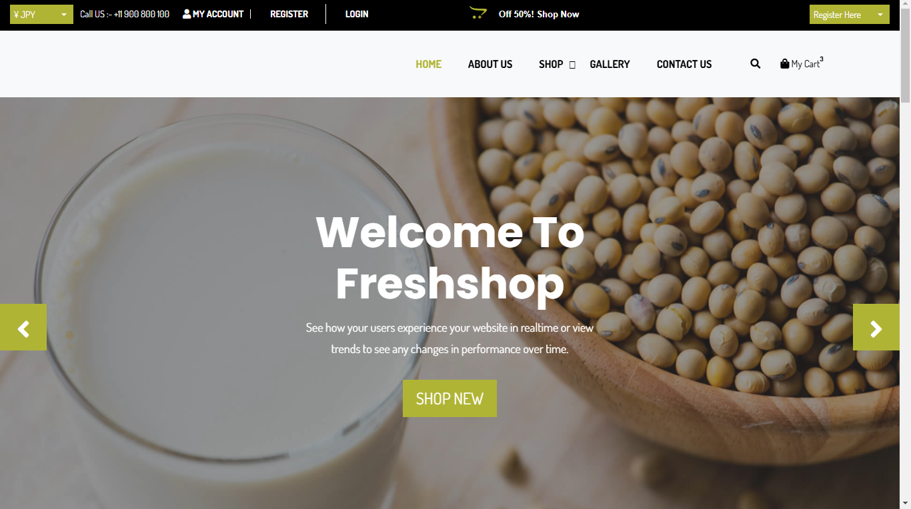
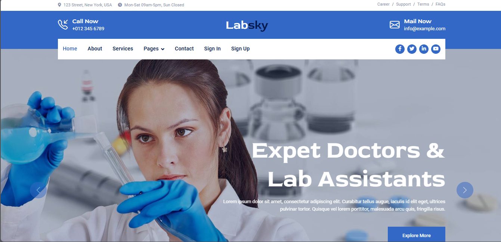
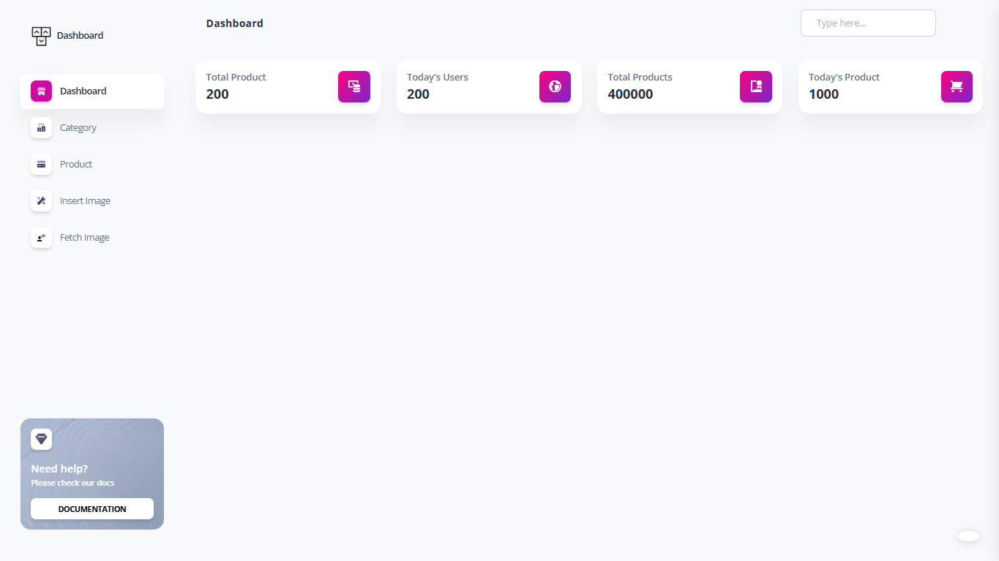
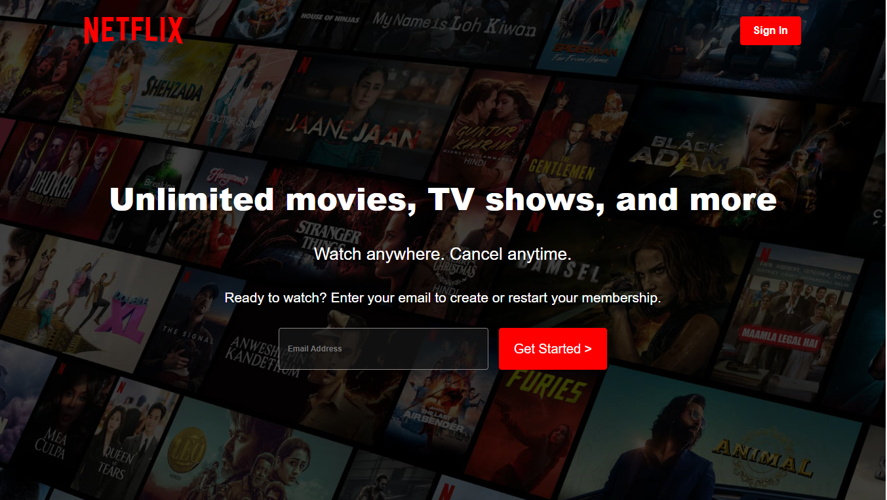
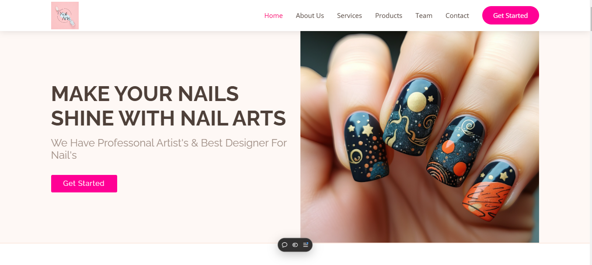
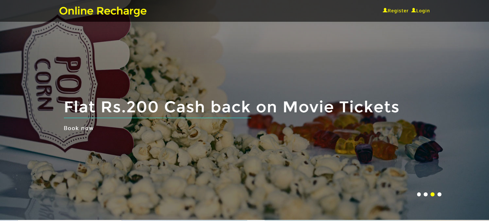
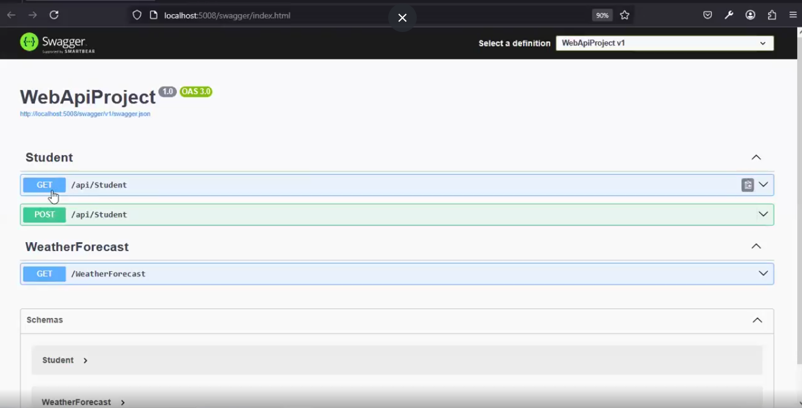
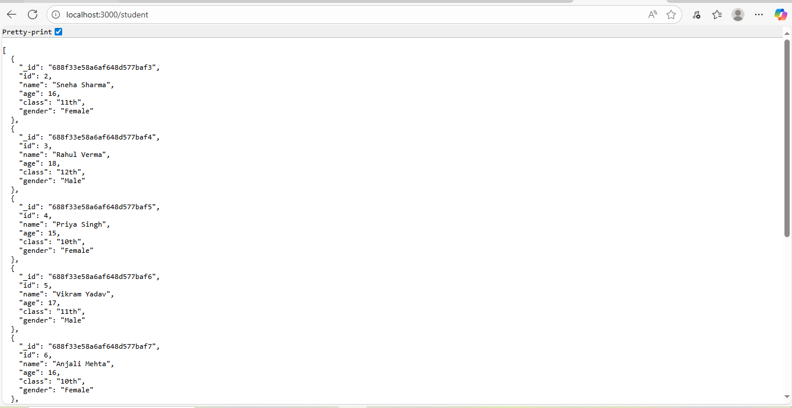
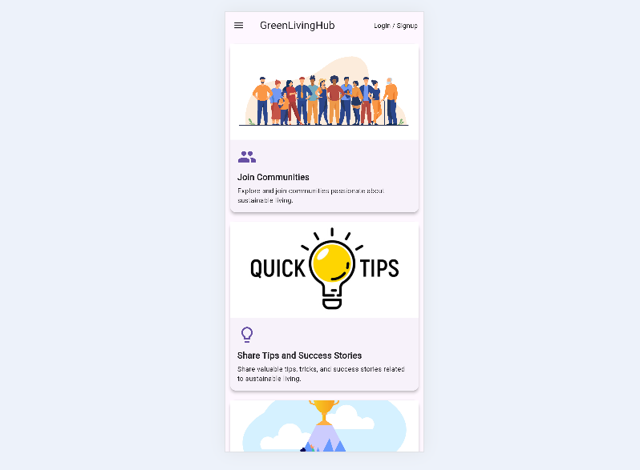

Web Developer
Hello! I'm Sufiyan Imran, a passionate Full Stack Web Developer skilled in HTML, CSS, JavaScript, jQuery, React (with Vite), PHP, Laravel, C#, ASP.NET Core MVC, Node.js, MySQL, SQL, MongoDB, Bootstrap, Git, and UI/UX design. I also have experience in mobile app development using Dart and Flutter. Additionally, I have basic knowledge of Angular, Firebase, and Crystal Reports. I specialize in creating intuitive and scalable web and mobile applications that deliver great user experiences. With expertise in design tools like Figma, combined with Office Automation skills to boost productivity, I bring creativity and functionality together in every project. If you're looking for a dedicated full stack developer or someone to elevate your front-end or mobile projects, I’d love to connect and discuss how we can collaborate to bring your vision to life. Thank you for taking the time to get to know me.
Skills
Education
Experiences
Worked as a Pharmacy Billing and Data Entry Operator where I handled daily billing of medicines using computer-based billing software. I was responsible for entering purchase and sales data accurately into the system and maintaining patient and customer medicine records. I ensured correct medicine prices, quantities, and expiry dates during billing. Additionally, I prepared daily sales reports and billing summaries while assisting customers and coordinating with store staff to ensure smooth store operations.
Worked as an eBay Listing and Customer Support Executive where I created and managed product listings with accurate titles, descriptions, and pricing. I uploaded product images and optimized listings to improve product visibility and sales. I handled customer inquiries, messages, and order-related issues while managing returns, refunds, and feedback to maintain positive seller ratings. I also regularly updated inventory and order status to ensure smooth operations.
I specialize in creating visually appealing, responsive, and interactive web interfaces. By using modern technologies like HTML, CSS, JavaScript, and frameworks, I ensure seamless user experiences across all devices.
From database design to API integration, I develop scalable and secure server-side solutions. Whether it's handling complex data or building robust architectures, my backend expertise ensures your web applications run smoothly.


Technologies Used: Laravel,MySql
Created an E-Vaccination Booking system where users can register and book vaccination slots online. This project involved developing both the front-end and back-end using Laravel, with features like user registration, login, and booking management

Technologies Used: Php,MySql
Built an admin dashboard to manage users, view reports, and monitor system activity. The dashboard features a CRUD (Create, Read, Update, Delete) system for managing data. Used PHP for backend development to ensure smooth functionality and proper data handling



Technologies Used: Html,Css,JavaScript,.Net Core MVC ,Sql
This project allows users to view and select recharge plans and perform mobile recharges. Built using ASP.NET Core MVC and SQL Server, it includes an admin dashboard for managing recharge plans, companies, and transactions.

Technologies Used: ASP.NET Core MVC | SQL Server | Swagger
Developed a RESTful API using ASP.NET Core MVC, implementing GET and POST methods to retrieve and send data to a SQL Server database. Integrated Swagger for seamless API documentation and testing. This project deepened my understanding of API development, database interaction, and backend architecture in full-stack development.

Technologies Used: Node.js, Express.js, MongoDB
A backend RESTful API designed for managing student records. It supports full CRUD operations using MongoDB and was tested using tools like Postman. This project is backend-focused and ready to be integrated with any frontend framework.

Technologies Used: Flutter | Firebase | Dart
Developed a mobile application to help users adopt sustainable living by calculating carbon footprints, joining eco-conscious communities, discovering green events, and tracking achievements. Integrated Firebase Authentication for secure login and built an engaging UI for seamless user experience. Enhanced environmental awareness through interactive tools and social sharing features.
Copyright © Sufiyan Imran. All Rights Reserved 2026